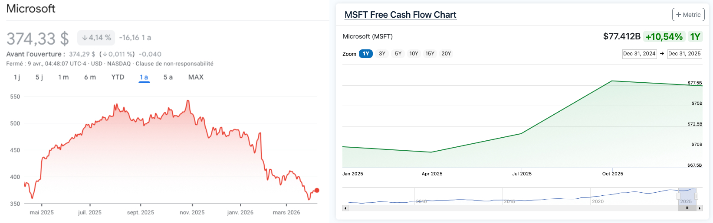
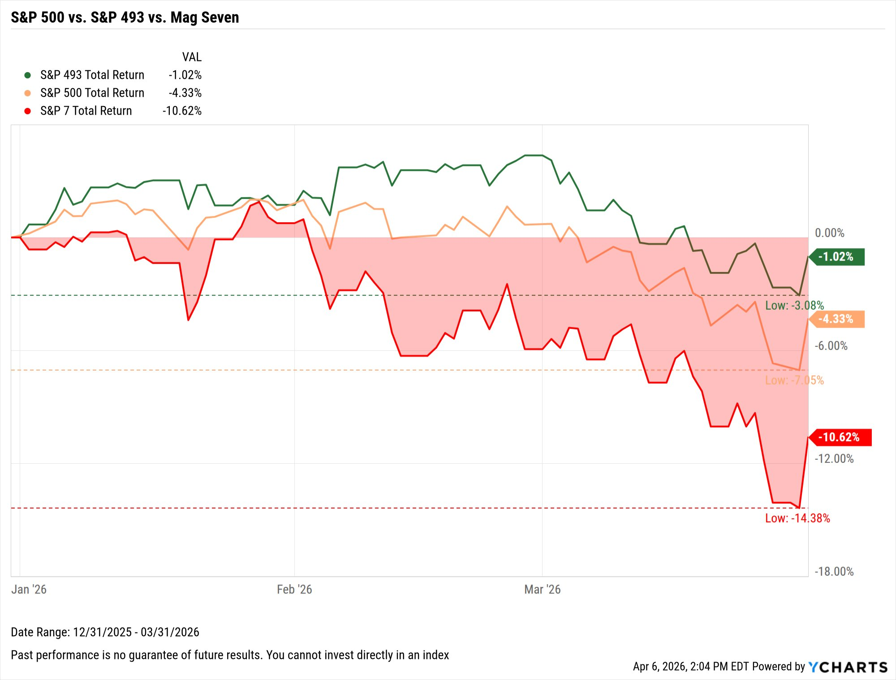
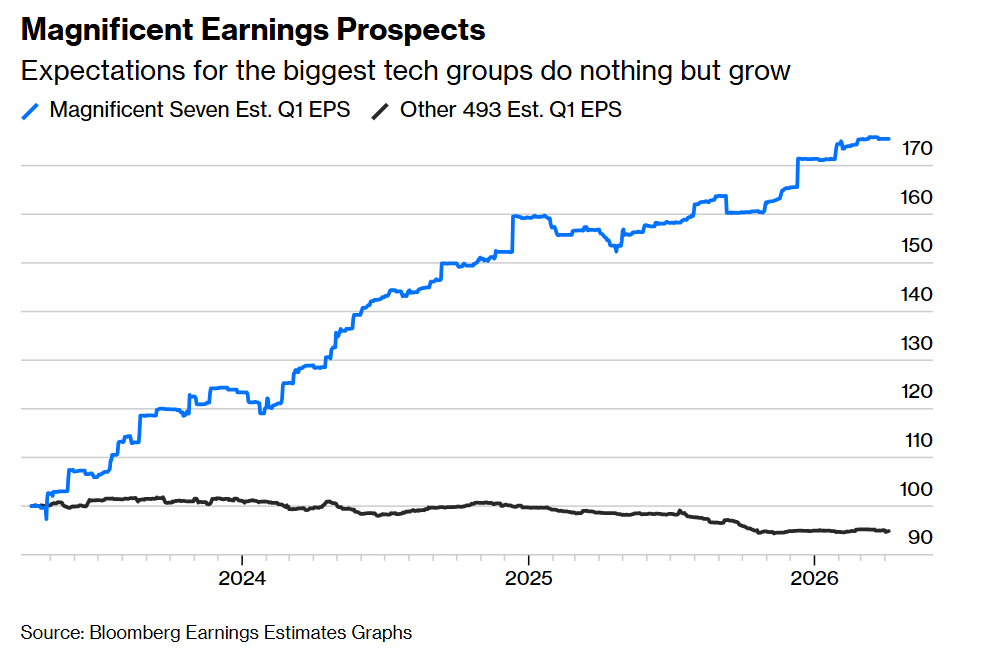

Savoir identifier une entreprise de qualité exceptionnelle est une compétence rare. Savoir estimer sa valeur intrinsèque est un atout mathématique. Mais savoir quand appuyer sur la détente pour initier une position ou renforcer une ligne existante est ce qui sépare les théoriciens des investisseurs à succès.
En Quality Investing, nous ne cherchons pas à "trader" la volatilité, mais à l'exploiter. La volatilité est le prix que nous payons pour obtenir des rendements supérieurs, et elle devient notre meilleure amie lorsqu'elle déconnecte temporairement le prix d'une action de sa réalité fondamentale. Dans ce chapitre, nous allons définir les protocoles stricts d'achat et de renforcement pour éviter les pièges émotionnels du marché.
1. L'achat initial : L'entrée dans l'excellence
Initier une position dans une nouvelle entreprise est un acte fort qui doit respecter trois conditions sine qua non :
- La qualité est gravée dans le marbre : L'entreprise doit avoir passé avec succès le filtre des 15 critères (Module 5). Son Moat est intact, ses marges sont solides et sa direction est alignée.
- Le prix est attractif : On n'achète jamais une entreprise "à n'importe quel prix". L'achat intervient quand le cours de bourse offre une marge de sécurité par rapport à notre calcul de Fair Value (Chapitre 5.1).
- La structure du portefeuille le permet : L'achat est pertinent si le nombre de positions reste petit (portefeuille concentré, Chapitres 6.1 à 6.4). On ne "collectionne" pas les actions ; on alloue du capital là où la conviction est la plus forte.
La citation à retenir 💬
"Il vaut beaucoup mieux acheter une entreprise extraordinaire à un prix ordinaire, qu'une entreprise ordinaire à un prix extraordinaire."
— Warren Buffett
2. L'art du renforcement : Accumuler quand le marché doute
Renforcer une ligne déjà présente en portefeuille est souvent plus difficile psychologiquement que l'achat initial, car cela implique de moyenner son prix, parfois à la baisse. C'est pourtant là que se bâtissent les plus grandes fortunes. Voici quand vous devez renforcer :

Un renforcement intelligent repose sur quatre piliers :
- Retour à une valorisation attrayante : Une entreprise que vous aimiez à 200€ devient mathématiquement deux fois plus intéressante à 150€, si ses bénéfices n'ont pas bougé.
- Amélioration des fondamentaux : Si le cash-flow augmente ou que les marges s'étendent alors que le prix stagne, l'asymétrie de rendement devient explosive.
- Déconnexion Sentiment vs Chiffres : C'est le cas le plus fréquent. Le marché "a peur" d'un facteur macroéconomique ou d'une news court-termiste, mais les rapports financiers (les chiffres) restent excellents.
- Achats d'Insiders : Si les dirigeants de l'entreprise achètent massivement des titres avec leur propre argent à ces niveaux de prix, c'est un signal de confiance que vous ne devez pas ignorer.
3. La Matrice de décision StocksPickeur
Pour simplifier votre pilotage, voici la matrice de réaction que vous devez appliquer froidement face aux mouvements de marché :
4. Différencier "Moyenne à la baisse" et "Renforcement"
Une erreur tragique des investisseurs débutants est de pratiquer la moyenne à la baisse (Averaging Down) de manière aveugle. Cela consiste à racheter des actions d'une entreprise médiocre simplement parce que son prix s'effondre, dans le seul but de diminuer artificiellement son Prix de Revient Unitaire (PRU) et d'espérer "se refaire" plus vite au moindre rebond.
C'est ce qu'on appelle attraper un couteau qui tombe. Dans notre stratégie, nous ne faisons jamais de moyenne à la baisse sur un titre dont les fondamentaux se dégradent (la fameuse case rouge de notre matrice). Nous ne faisons que renforcer nos positions sur des "Compounders" dont la valeur intrinsèque augmente, mais dont le prix a été temporairement sanctionné par la volatilité du marché.
5. Le Pyramidage et le Poids Maximal
Même face à la meilleure opportunité du monde, la gestion du risque prime toujours. Plutôt que de rentrer "All-in" sur un renforcement, utilisez la technique du Pyramidage. Cela consiste à construire sa position par paliers.
Par exemple, si vous souhaitez allouer 4 000€ supplémentaires à une position : vous pouvez entrer à 50% (2 000€) au prix actuel, garder 25% (1 000€) si le prix chute encore de 10% sans raison fondamentale, et les 25% restants pour une ultime baisse irrationnelle.
Attention cependant à votre limite de concentration (rappel du Chapitre 6.3). Définissez une règle stricte : "Même si LVMH perd 30% et que c'est une affaire en or massif, je ne renforce plus si la ligne représente déjà 20% de mon portefeuille global." Ne sacrifiez jamais la survie de votre portefeuille sur l'autel d'une seule bonne affaire.
6. La psychologie du "Bottom" (Le point le plus bas)
Le blocage mental le plus fréquent lors d'une baisse des marchés s'appelle le FOMO inversé (ou l'avarice). Vous voyez une entreprise de qualité dont la valorisation est excellente, mais vous hésitez à appuyer sur le bouton "Acheter". Pourquoi ? Parce que vous vous dites : "Et si ça baissait encore demain de 5% ?"
La citation à retenir 💬
"N'essayez pas d'acheter au plus bas et de vendre au plus haut. Seuls les menteurs y parviennent."
— Bernard Baruch
Retenez ceci : il est mathématiquement impossible d'attraper le "bottom" exact, sauf par une chance pure. Notre objectif n'est pas d'acheter au prix le plus bas de l'histoire, mais d'acheter en dessous de la valeur intrinsèque. Si l'action vaut 100€ et que vous l'achetez à 70€, vous faites une excellente affaire. Qu'elle descende temporairement à 65€ la semaine suivante ne change rien à la rentabilité de votre investissement à 10 ans.
7. Exploiter l'erreur du marché : L'anatomie d'une déconnexion
Pour illustrer concrètement le "combo gagnant" de notre matrice (stratégie GARP), plongeons dans l'une des déconnexions récentes les plus fascinantes du marché boursier. Les renforcements les plus lucratifs interviennent toujours lorsque vous parvenez à identifier une panique irrationnelle, où le sentiment général s'effondre alors que les fondamentaux s'envolent.

Face à ce premier graphique, la réaction humaine normale est la peur. C'est l'émotion qui dicte les mouvements de marché à court terme. Mais l'investisseur Quality sait que le cours de bourse n'est qu'un thermomètre des humeurs. Au lieu de regarder le prix qui chute, nous devons soulever le capot et analyser la réalité du business : que font les véritables bénéfices de ces entreprises pendant cette période de "crise" ?

Voici la définition même de la Déconnexion. Le prix de l'actif (ce que vous payez) baissait violemment, tandis que sa valeur intrinsèque et ses bénéfices (ce que vous obtenez) augmentaient agressivement.
C'est exactement dans cet interstice, lorsque le marché, aveuglé par des peurs macroéconomiques (taux d'intérêts, inflation), offre des leaders mondiaux avec un "discount" massif, que vous devez appuyer sur le bouton "Renforcer". Ce n'est plus un pari risqué, c'est une exécution mathématique et rationnelle du Quality Investing.
Règle d'or absolue : N'oubliez jamais que cette stratégie ne fonctionne que si la partie qualitative (le Moat) reste intacte. Si une entreprise chute parce qu'elle perd un avantage concurrentiel ou que sa dette étouffe son bilan, ce n'est pas une opportunité, c'est un "Value Trap" (piège à valeur).
🔑 Ce qu'il faut retenir
Investir, c'est avant tout un combat contre soi-même. Acheter quand tout va bien est facile, mais renforcer une ligne quand le cours affiche -15% et que Twitter hurle à la fin du monde demande une conviction de fer. Cette conviction ne s'invente pas : elle naît de votre travail d'analyse préalable.
Si vous avez fait vos devoirs sur le Moat et le Free Cash Flow, une baisse de prix n'est plus une source de stress, mais une opportunité de soldes sur l'excellence. Soyez l'acheteur rationnel quand le marché est émotionnel.